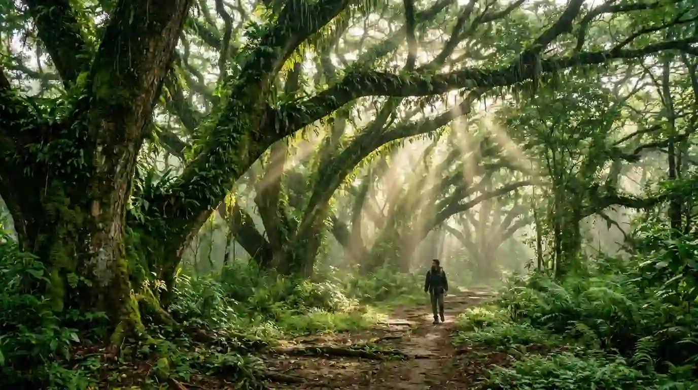
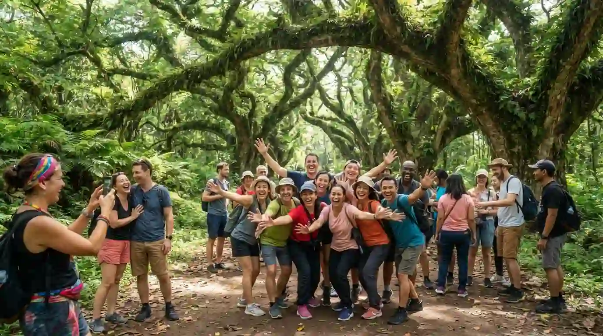
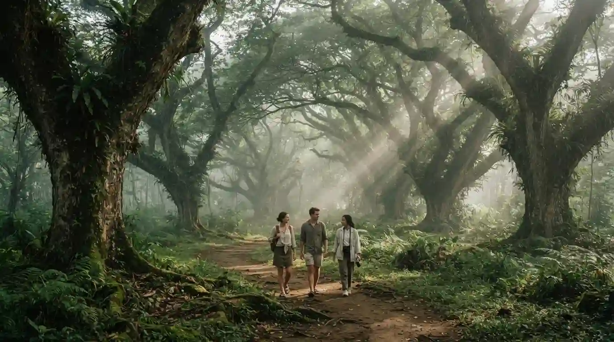

Panduan Wisata Djawatan Benculuk Banyuwangi
Informasi lengkap seputar Djawatan Benculuk, mulai dari rute, harga tiket, hingga tips menikmati keindahan hutan trembesi yang magis.

Djawatan Benculuk adalah kawasan wisata alam yang terletak di Desa Benculuk, Kecamatan Cluring, Banyuwangi. Tempat ini terkenal dengan deretan pohon trembesi (ki hujan) berusia ratusan tahun yang menjulang tinggi dengan akar dan cabang yang besar dan berkelok-kelok, menciptakan suasana hutan yang magis dan dramatis.
Keunikan Djawatan sering dibandingkan dengan latar film Lord of the Rings karena nuansa hutannya yang mistis dan memukau. Tempat ini menjadi salah satu spot foto paling populer di Banyuwangi, terutama saat pagi hari ketika sinar matahari menembus celah-celah dedaunan menciptakan efek cahaya yang indah. Selain berfoto, pengunjung juga dapat menikmati suasana sejuk di bawah naungan pohon-pohon raksasa ini.
Ringkasan Cepat
Informasi penting seputar Djawatan Benculuk
Lokasi
Desa Benculuk, Kecamatan Cluring, Kabupaten Banyuwangi, Jawa Timur
Jarak
±30 km dari pusat kota Banyuwangi (sekitar 45 menit berkendara)
Tiket Masuk
Rp 5.000 per orang (hari biasa), Rp 10.000 per orang (akhir pekan/hari libur)
Jam Buka
06:00 - 17:00 WIB (setiap hari)
Waktu Terbaik
Pagi hari (06:00 - 09:00) saat sinar matahari menembus celah pohon trembesi
Aktivitas Utama
Foto-foto, piknik, menikmati suasana hutan, bersantai di bawah pohon trembesi raksasa
Tips & Persiapan Berkunjung
- Datanglah pagi hari sekitar pukul 06:00 - 08:00 untuk mendapatkan efek cahaya terbaik saat sinar matahari menembus celah pohon trembesi — momen ini sangat populer untuk foto.
- Bawa kamera atau pastikan baterai ponsel penuh, karena Djawatan menawarkan banyak spot foto yang indah dan instagramable.
- Gunakan pakaian yang nyaman dan sepatu yang sesuai untuk berjalan di area hutan yang mungkin sedikit lembab.
- Hindari berkunjung saat hari libur nasional atau akhir pekan panjang karena tempat ini bisa sangat ramai.
- Tersedia warung makan dan minuman di sekitar area Djawatan, namun disarankan membawa bekal sendiri untuk piknik di bawah pohon.
- Jaga kebersihan dan jangan merusak pohon-pohon trembesi yang sudah berusia ratusan tahun demi kelestarian tempat wisata ini.
Galeri Foto
Keindahan Djawatan Benculuk yang memukau
Peta Lokasi
Paket Wisata Terkait
Pilihan paket wisata untuk mengunjungi Djawatan Benculuk

Open Trip Hutan Trembesi Magis Djawatan
Wisata hutan trembesi magis ala Lord of the Rings dan bersantai menikmati keindahan alam di Djawatan.
Lihat Detail
Private Trip Djawatan Photo Session
Paket khusus bagi pecinta fotografi. Termasuk fotografer profesional, properti foto, dan mengeksplorasi spot terbaik.
Lihat DetailPertanyaan yang Sering Diajukan
Informasi umum seputar kunjungan ke Djawatan Benculuk

Jam berapa Djawatan Benculuk dibuka?
Djawatan Benculuk umumnya dibuka mulai pukul 06:00 WIB hingga 17:00 WIB setiap hari. Disarankan datang pagi hari untuk mendapatkan pencahayaan terbaik dan suasana yang lebih tenang sebelum ramai pengunjung.
Mengapa Djawatan Benculuk disebut mirip Lord of the Rings?
Djawatan Benculuk memiliki deretan pohon trembesi berusia ratusan tahun dengan batang dan akar yang besar, berliku, dan menjulang tinggi. Suasana hutan yang rimbun, dramatis, dan magis ini mengingatkan banyak pengunjung pada latar film Lord of the Rings, sehingga julukan tersebut melekat dan menjadi daya tarik utama tempat ini.
Apakah ada fasilitas di Djawatan Benculuk?
Ya, di area Djawatan Benculuk tersedia fasilitas seperti area parkir, toilet umum, warung makan dan minuman, serta spot-spot foto yang sudah ditata. Tempat ini juga cukup ramah untuk keluarga dengan anak-anak karena areanya relatif datar dan aman.
Apakah Djawatan Benculuk cocok untuk anak-anak?
Ya, Djawatan Benculuk sangat cocok untuk wisata keluarga termasuk anak-anak. Area hutan relatif datar dan mudah dijelajahi. Anak-anak biasanya sangat menikmati suasana hutan yang unik dan pohon-pohon besar yang bisa dijadikan spot bermain dan berfoto.
Siap Menjelajahi Djawatan Benculuk?
Hubungi kami sekarang untuk merencanakan perjalanan Anda ke Djawatan Benculuk. Kami siap membantu Anda mendapatkan pengalaman wisata hutan trembesi yang tak terlupakan di Banyuwangi.